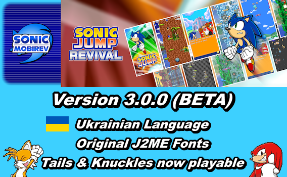

Upload Date: 04/22/2026

Version 3.0.0 (Beta) release:
Sonic Jump Anniversary has turned into Sonic Jump Revival!
The beta version of Sonic Jump Revival has been released alongside the Sonic Mobirev project to be part of the Revival series of Sonic Android apps.
This update introduces new features such as the Ukrainian language made by Alex Khayrullin, the original J2ME fonts, and Tails & Knuckles are now playable!
However, being a beta version, there are still updates on the way.
This version isn't the definitive version.
LIST OF MODIFICATIONS AND IMPROVEMENTS
Potential:
- Make more in-game events.
- Fix a performance bug in Jungle Zone while playing on certain Android devices.*
- Add a fully-functional Multiplayer game mode.*
- Make the game run at 50fps or above and at normal speed.*
*Help wanted. For more information, check out the Projects page.
v3.0.0 (Beta):
- Make the J2ME fonts set by default.
- Add a save data location to "Android/media".
- Add new abilities for Tails and Knuckles.
- Add Tails and Knuckles as playable characters (Tails is now available from the start).
- Fix the double jump sprites of Sonic and Shadow.
- Improve the Russian language.
- Use the new Sonic sprites in the "player" folder instead of the original "196619.png" sprite sheet.
- Add a new "player" folder to add more playable characters and change their in-game positions.
- Change the tinyprint font size from 24 to 18 (except in Japanese and Chinese).
- Make a new tinyWrapped() method to implement auto-line breaks for tinyprint text (only during the cutscenes and the in-game HELP text).
- Make the Chinese language compatible with the J2ME fonts (hugeprint text only).
- Change the "font.png" sprite sheet to add hugeprint characters (except for Russian and Ukrainian) and Chinese numbers.
- Add new special characters to replace in specialCharacterReplace().
- Bring back the animated tinyprint text during cutscenes.
- Add new methods related to the J2ME fonts and special character replacements when changing the FONTS option.
- Replace the J2ME fonts of the "fonts" folder by the ones from the "font.png" sprite sheet when FONTS: J2ME.
- Add the Ukrainian language to the mod.
- Change the introduction animation.
- Add Android TV compatibility (Not finished).
- Fix the save glitch on certain Android devices.
- Increase the ExtrasPic[] and ExtrasPicBackup[] maximum value to 23 to fix a cutscene bug during Bonus Zone Act 3.
- Add controller support (Not finished).
v2.2.0:
- Make a Russian version of the mod (made by Moonlight Sonic).
- Increase the stringlist[] value from 50 to 64 to display 64 lines of text per string.
v2.1.0:
- Fix the sound effect lag.
- Convert the language files from .dat to .json format.
v2.0.0:
- Remove the monthly_mode conditions to make the game run properly.
- Remove the Android navigation bar.
- Make the game functional on Android 8 and above by removing an obsolete touch command.
- Add the Chinese language to the mod.
- Remove the Closing Activity message when pressing BACK on the Android navigation bar.
- Move the game canvas to the top of the screen to fit with the menu touch controls.
- Extract all the sprites of the .pak files and place them in the assets folder.
- Make the Language Select menu functional.
- Add a GAME WEBSITE link in the MAIN menu.
- Add an auto-language detection.
- Add Shadow the Hedgehog as a playable character.
- Improve the audio quality of "tune07".
- Replace .mid files by .ogg files.
- Add a SPEEDRUN MODE with a new record in the HIGH SCORES menu.
- Change the name of PLAY GAME to STORY MODE.
- Add a SOUND TEST menu in the OPTIONS menu.
- Replace the original game intro by the one based on a China Mobile version of Sonic Jump.
- Replace the Enable Sound menu by the SOUNDTRACK Select menu.
- Add in-game events and an event information menu to announce the events.
- Fix the sound lag for certain Android devices.
- Add an option to change the virtual pad graphics.
- Rearrange the OPTIONS menu for better presentation.
- Add a CRT option to change the screen display aesthetics.
- Rename the GAME WEBSITE option into INTERNET (GAME WEBSITE is available in this option).
- Add an ONLINE STAGES link in the INTERNET menu to play online stages built via the Map Editor.
- Increase the stage selection input width from 68/68/68 pixels to 75/80/75 pixels.
- Add a cheat code to unlock all new unapproved content (check out the Cheat Code page for more information).
- Add a Map Editor to save/load/play your own maps and listen to music.
- Add an option to change in-game sprites (Default/J2ME).
- Add an option to change font styles and make the J2ME font styles the default option for the SHC version of the game.
- Add an additional option sub-menu named GRAPHIC STYLES for the pad, sprites, fonts and CRT filters.
v1.1.0:
- Improve the double jump command when VIRTUAL PAD: OFF by removing the limit to the Select Icon.
- Improve the game soundtrack for better audio quality.
- Make an English, French, Italian, German, Spanish, Traditional and Brazilian Portuguese version of the mod.